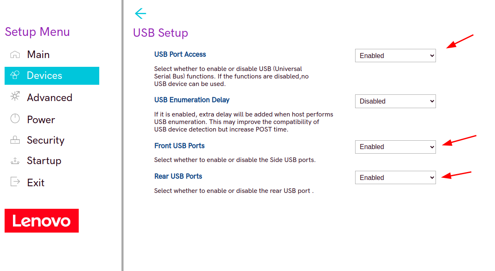

En esta primera actividad, vamos a realizar el bastionado de una BIOS/UEFI, lo cual consiste en aplicar la mayor cantidad de medidas de seguridad posibles para proteger nuestro equipo en el arranque.
Para ello he utilizado el emulador de Bios de Lenovo que se proporcionó en la descripción de la misma. En concreto, he usado la Bios de un Lenovo v55T-15ARE
Puertos USB
Una vez accedemos a la BIOS, lo primero que veremos sera la pantalla principal, donde se nos mostraran las principales características del equipo.
La primera configuración que podríamos hacer, y digo podríamos porque es desactivar el uso de los puertos USB, y quizás sea una medida demasiado extrema, ya que una vez arranque el equipo, no dispondremos de los puertos USB, esto seria solo útil si sabemos que no vamos a necesitarlos. Si es nuestro caso y no los necesitamos, entonces, seleccionaremos la opción Devices en el menú de la izquierda.

Una vez dentro del menú de dispositivos, seleccionaremos la configuración de los USB.
Y desactivaremos las opciones:
- USB Port Access: Con la que desactivamos el funcionamiento de los puertos USB
- Front USB Ports: Con lo que desactivamos los puertos USB frontales.
- Rear USB Ports: Con lo que desactivamos los puertos USB traseros.

Contraseñas y opciones de HDD
Ahora, vamos a ver como podemos configurar contraseñas para los discos duros y para el acceso a la BIOS.
Seleccionamos la opción "Security" en el menú de la izquierda y comenzaremos por asignar contraseña para el usuario administrador de la BIOS, es decir, el usuario que tendrá privilegios para hacer cambios. Así, que seleccionaremos "Set supervisor password"

y nos aparecerá una ventana donde introducimos la contraseña.
Seguidamente configuraremos una contraseña para proteger el encendido del equipo, es decir, se nos solicitará esta contraseña cuando encendamos el equipo, si así lo activamos en la opción pertinente. Para ello hacemos lo mismo pero con la opción "Set Power-on password".
Ahora, podemos también configurar, activandolo según se prefiera, lo siguiente:
- Secure Roll back prevention: con lo que evitaremos que se pueda flashear una versión anterior de la que está instalada en este momento.
- Require SVP when flashing: así haremos que se solicite la contraseña de supervisor cuando se quiera flashear una versión de la BIOS.
- BIOS password at system boot: Si lo activamos, se nos solicitará la contraseña de arranque que configuramos anteriormente, al arrancar el equipo.
- BIOS password at reboot: Esta opción es similar a la anterior, pero haremos que se nos solicite, o no, la contraseña de arranque cuando reiniciemos nuestro equipo.
- POP changeable by user: Con esta opción, haremos que solo el usuario supervisor pueda cambiar la contraseña de arranque.
- BIOS password at boot device list: Cuando en el arranque se pulse F12 para seleccionar el dispositivo desde el que arrancar, se nos solicitará la contraseña de supervisor.
Otra opción de seguridad que podemos activar es "SMART USB Protection", con la que conseguiremos, en función de como lo configuremos, que solo se pueda copiar desde el equipo al USB y no al revés, o viceversa, o que solo se pueda leer desde los USB.
También podemos configurar una contraseña para el Disco Duro, para ello seleccionamos la opción "Hard Disk Password", donde podremos seleccionar que unidades son las que queremos proteger con contraseña. Si lo configuramos normal, se nos pedirá esta contraseña cuando se acceda por primera vez al disco protegido, pero podemos hacer que se nos pida cada vez que el disco salga del estado de reposo si marcamos la opción "Require HDP on system boot".
Otras opciones de seguridad
Una opción muy curiosa que nos ofrece esta BIOS, es que podemos realizar un borrado seguro de disco duro, accediendo a "Security Erase HDD Data", en la que podremos seleccionar el disco al que queremos eliminar los datos de forma segura.
Si accedemos a "TCG Feature Setup", podemos configurar si activamos el chip de seguridad TPM 2.0 de Microsoft.
También podemos activar el Secure Boot, usando la opción con ese mismo nombre.
Otras opciones de seguridad bastante interesantes son:
- Un protector contra Malware.
- Un detector de intrusión física, detectando si alguien ha abierto la tapa del equipo.
- Un detector de modificación en la configuración, es decir, si algún dispositivo es quitado o instalado, habrá que confirmarlo antes de que funcione accediendo a la BIOS e identificándose como Supervisor.
- Un contador de contraseñas erróneas, que bloqueara los intentos fraudulentos de introducción de contraseñas.
Finalmente, como configuracion de seguridad también importante, podemos excluir de la secuencia de arranque los dispositivos USB, así no se podrá arrancar el equipo con un disco duro externo, un Pendrive, etc.
Y bueno, es muy importante que después de haber realizado las modificaciones, guardemos los cambios, o no habrá servido para nada y la BIOS/UEFI de nuestro equipo seguirá estando insegura.